Simulations to test ctwas summary stats version, 45k samples
Last updated: 2021-04-09
Checks: 4 3
Knit directory: causal-TWAS/
This reproducible R Markdown analysis was created with workflowr (version 1.6.2). The Checks tab describes the reproducibility checks that were applied when the results were created. The Past versions tab lists the development history.
The R Markdown file has unstaged changes. To know which version of the R Markdown file created these results, you’ll want to first commit it to the Git repo. If you’re still working on the analysis, you can ignore this warning. When you’re finished, you can run wflow_publish to commit the R Markdown file and build the HTML.
Great job! The global environment was empty. Objects defined in the global environment can affect the analysis in your R Markdown file in unknown ways. For reproduciblity it’s best to always run the code in an empty environment.
The command set.seed(20191103) was run prior to running the code in the R Markdown file. Setting a seed ensures that any results that rely on randomness, e.g. subsampling or permutations, are reproducible.
Great job! Recording the operating system, R version, and package versions is critical for reproducibility.
- param1-1
To ensure reproducibility of the results, delete the cache directory simulation-ctwas-ukbWG-gtex.adipose_s80.45_cache and re-run the analysis. To have workflowr automatically delete the cache directory prior to building the file, set delete_cache = TRUE when running wflow_build() or wflow_publish().
Using absolute paths to the files within your workflowr project makes it difficult for you and others to run your code on a different machine. Change the absolute path(s) below to the suggested relative path(s) to make your code more reproducible.
| absolute | relative |
|---|---|
| ~/causalTWAS/causal-TWAS/analysis/summarize_ctwas_plots.R | analysis/summarize_ctwas_plots.R |
| ~/causalTWAS/causal-TWAS/analysis/summarize_twas-coloc_plots.R | analysis/summarize_twas-coloc_plots.R |
| ~/causalTWAS/causal-TWAS/code/qqplot.R | code/qqplot.R |
Great! You are using Git for version control. Tracking code development and connecting the code version to the results is critical for reproducibility.
The results in this page were generated with repository version b096cb2. See the Past versions tab to see a history of the changes made to the R Markdown and HTML files.
Note that you need to be careful to ensure that all relevant files for the analysis have been committed to Git prior to generating the results (you can use wflow_publish or wflow_git_commit). workflowr only checks the R Markdown file, but you know if there are other scripts or data files that it depends on. Below is the status of the Git repository when the results were generated:
Ignored files:
Ignored: .Rhistory
Ignored: .Rproj.user/
Ignored: .ipynb_checkpoints/
Ignored: analysis/.ipynb_checkpoints/
Ignored: code/.ipynb_checkpoints/
Ignored: code/before_package/.ipynb_checkpoints/
Ignored: code/workflow/.ipynb_checkpoints/
Ignored: data/
Unstaged changes:
Modified: analysis/simulation-ctwas-ukbWG-gtex.adipose_s40.22.Rmd
Modified: analysis/simulation-ctwas-ukbWG-gtex.adipose_s40.22_mixnormal.Rmd
Modified: analysis/simulation-ctwas-ukbWG-gtex.adipose_s80.45.Rmd
Modified: analysis/simulation-ctwas-ukbWG-gtex.adipose_s80.45_mixnormal.Rmd
Modified: analysis/summarize_basic_plots.R
Modified: analysis/summarize_ctwas_plots.R
Modified: analysis/summarize_twas-coloc_plots.R
Note that any generated files, e.g. HTML, png, CSS, etc., are not included in this status report because it is ok for generated content to have uncommitted changes.
These are the previous versions of the repository in which changes were made to the R Markdown (analysis/simulation-ctwas-ukbWG-gtex.adipose_s80.45.Rmd) and HTML (docs/simulation-ctwas-ukbWG-gtex.adipose_s80.45.html) files. If you’ve configured a remote Git repository (see ?wflow_git_remote), click on the hyperlinks in the table below to view the files as they were in that past version.
| File | Version | Author | Date | Message |
|---|---|---|---|---|
| Rmd | b096cb2 | simingz | 2021-04-04 | add coloc |
| html | b096cb2 | simingz | 2021-04-04 | add coloc |
| Rmd | 3dd8cb2 | simingz | 2021-02-19 | mix normal simulate phenotype |
| Rmd | b835da3 | simingz | 2021-02-10 | match ctwas 0.1.10 |
| html | b835da3 | simingz | 2021-02-10 | match ctwas 0.1.10 |
| Rmd | 68d891f | simingz | 2021-01-26 | ctwas para results |
| html | 68d891f | simingz | 2021-01-26 | ctwas para results |
library(ctwas)
library(data.table)
suppressMessages({library(plotly)})
library(tidyr)
library(plyr)
library(stringr)
source("~/causalTWAS/causal-TWAS/analysis/summarize_ctwas_plots.R")
source('~/causalTWAS/causal-TWAS/analysis/summarize_twas-coloc_plots.R')
source('~/causalTWAS/causal-TWAS/code/qqplot.R')pgenfn = "/home/simingz/causalTWAS/ukbiobank/ukb_pgen_s80.45/ukb-s80.45_pgenfs.txt"
ld_pgenfn = "/home/simingz/causalTWAS/ukbiobank/ukb_pgen_s80.45/ukb-s80.45.2_pgenfs.txt"
outputdir = "/home/simingz/causalTWAS/simulations/simulation_ctwas_rss_20210117/" # /
comparedir = "/home/simingz/causalTWAS/simulations/simulation_ctwas_rss_20210117_compare/"
runtag = "ukb-s80.45-adi"
configtags = 1
simutags = paste(rep(1:2, each = length(1:5)), 1:5, sep = "-")
pgenfs <- read.table(pgenfn, header = F, stringsAsFactors = F)[,1]
pvarfs <- sapply(pgenfs, prep_pvar, outputdir = outputdir)
ld_pgenfs <- read.table(ld_pgenfn, header = F, stringsAsFactors = F)[,1]
ld_pvarfs <- sapply(ld_pgenfs, prep_pvar, outputdir = outputdir)
pgens <- lapply(1:length(pgenfs), function(x) prep_pgen(pgenf = pgenfs[x],pvarf = pvarfs[x]))Analysis description
n.ori <- 80000 # number of samples
n <- pgenlibr::GetRawSampleCt(pgens[[1]])
p <- sum(unlist(lapply(pgens, pgenlibr::GetVariantCt))) # number of SNPs
J <- 8021 # number of genesData
- GWAS summary statistics we simulated summary statistics data with different causal gene/SNP proportion and PVE. To simulate this data, we need the following:
genotype data we used is from UKB biobank, randomly selecting 80000 samples. We then filtered samples based on relatedness, ethics and other qc metrics, that ended up with n = 45087 samples. We use SNP genotype data from chr 1 to chr 22 combined from UKB. There are total = 6228664 SNPs.
Expression models The one we used in this analysis is GTEx Adipose tissue v7 dataset. This dataset contains ~ 380 samples, 8021 genes with expression model. FUSION/TWAS were used to train expression model and we used their lasso results. SNPs included in eQTL anlaysis are restricted to cis-locus 500kb on either side of the gene boundary. eQTLs are defined as SNPs with abs(effectize) > 1e-8 in lasso results.
To simulate phenotype data, first we impute gene expression based on expression models, then we set gene/SNP pi1 and PVE, get rough effect size for causal SNPs and genes and simulate phenotype under the sparse model with spike and slab prior. Then we performed GWAS for all SNPs and get z scores for each by univariate linear regression.
LD genotype reference We randomly selected 2000 samples to serve as the LD reference.
Expression models
We used GTEx Adipose tissue v7 dataset, the same as used for simulating phenotypes.
Analysis
Get z scores for gene expression. We used expression models and LD reference to get z scores for gene expression.
Run ctwas_rss We used LDetect to define regions.
ctwas_rssalgorithm first runs on all regions to get rough estimate for gene and SNP prior. Then run on small regions (having small probablities of having > 1 causal signals based on rough estimates) to get more accurate estimate. To lower computational burden, we downsampled SNPs (0.1), estimate parameters and convert back to orginal scale. Lastly, run susie with given L for all regions and for all genes and SNPs using estimated prior and prior variance.
Power estimation
simutag <- "1-1"
niter <- 1000
snp.p <- 5e-8
gene.p <- 1e-5
source(paste0(outputdir, "simu", simutag, "_param.R"))
load(paste0(outputdir, runtag, "_simu", simutag, "-pheno.Rd"))We select run 1-1 as an example.
- For SNPs. \(\pi_1 =\) 2.510^{-4} , effect size = 0.0283342, PVE = 0.482319. Power at 5e-08 p value cutoff:
load("data/power_s80.45.Rd")
# p1 <- pow(niter, n, phenores[["batch"]][[1]][["sigma_theta"]], snp.p)
print(p1)[1] 0.159- For genes. \(\pi_1 = 0.05\) , effect size = 0.0248146, PVE = 0.094024. Power at 1e-05 p value cutoff:
# p2 <- pow(niter, n, phenores[["batch"]][[1]][["sigma_beta"]], gene.p)
print(p2)[1] 0.2# save(p1,p2, file = "data/power_s80.45.Rd")GWAS/TWAS p value distribution
simutag <- "1-1"
chrom <- 1
source(paste0(outputdir, "simu", simutag, "_param.R"))
load(paste0(outputdir, runtag, "_simu", simutag, "-pheno.Rd"))We select run 1-1 as an example.
- For genes. \(\pi_1 = 0.05\) , effect size = 0.0248146, PVE = 0.094024. TWAS p values and qqplot:
exprgwasf <- paste0(outputdir, runtag, "_simu", simutag, ".exprgwas.txt.gz")
exprvarf <- paste0(outputdir, runtag, "_chr", chrom, ".exprvar")
exprid <- read_exprvar(exprvarf)[, "id"]
cau <- as.matrix(exprid[phenores[["batch"]][[chrom]][["idx.cgene"]]])
pdist_plot(exprgwasf, chrom, cau)
| Version | Author | Date |
|---|---|---|
| 68d891f | simingz | 2021-01-26 |
exprgwas <- fread(exprgwasf, header =T)
gg_qqplot(exprgwas$PVALUE)
| Version | Author | Date |
|---|---|---|
| 68d891f | simingz | 2021-01-26 |
- For SNPs. \(\pi_1 =\) 2.510^{-4} , effect size = 0.0283342, PVE = 0.482319. GWAS p values and qqplot:
snpgwasf <- paste0(outputdir, runtag, "_simu", simutag, ".snpgwas.txt.gz")
pvarf <- pvarfs[chrom]
snpid <- read_pvar(pvarf)[, "id"]
cau <- as.matrix(snpid[phenores[["batch"]][[chrom]][["idx.cSNP"]]])
pdist_plot(snpgwasf, chrom, cau, thin = 0.1)
| Version | Author | Date |
|---|---|---|
| 68d891f | simingz | 2021-01-26 |
snpgwas <- fread(snpgwasf, header =T)
gg_qqplot(snpgwas$PVALUE, thin = 0.1)
| Version | Author | Date |
|---|---|---|
| 68d891f | simingz | 2021-01-26 |
ctwas results
Results: Each row shows parameter estimation results from 5 simulation runs with similar settings (i.e. pi1 and PVE for genes and SNPs). Results from each run were represented by one dot, dots with the same color come from the same run. truth: the true parameters, selected_truth: the truth in selected regions that were used to estimate parameters, ctwas: ctwas estimated parameters (using summary statistics as input).
plot_par <- function(configtag, runtag, simutags){
source(paste0(outputdir, "config", configtag, ".R"))
phenofs <- paste0(outputdir, runtag, "_simu", simutags, "-pheno.Rd")
susieIfs <- paste0(outputdir, runtag, "_simu", simutags, "_config", configtag, ".s2.susieIrssres.Rd")
susieIfs2 <- paste0(outputdir, runtag, "_simu",simutags, "_config", configtag,".s2.susieIrss.txt")
mtx <- show_param(phenofs, susieIfs, susieIfs2, thin = thin)
par(mfrow=c(1,3))
cat("simulations ", paste(simutags, sep=",") , ": ")
cat("mean gene PVE:", mean(mtx[, "PVE.gene_truth"]), ",", "mean SNP PVE:", mean(mtx[, "PVE.SNP_truth"]), "\n")
plot_param(mtx)
}
plot_PIP <- function(configtag, runtag, simutags){
phenofs <- paste0(outputdir, "ukb-s80.45-adi", "_simu", simutags, "-pheno.Rd")
susieIfs <- paste0(outputdir, runtag, "_simu",simutags, "_config", configtag,".susieIrss.txt")
f1 <- caliPIP_plot(phenofs, susieIfs)
f2 <- ncausal_plot(phenofs, susieIfs)
gridExtra::grid.arrange(f1, f2, ncol =2)
}
plot_fusion_coloc <- function(configtag, runtag, simutags){
phenofs <- paste0(outputdir, runtag, "_simu", simutags, "-pheno.Rd")
fusioncolocfs <- paste0(comparedir, runtag, "_simu", simutags, ".Adipose_Subcutaneous.coloc.result")
f1 <- caliFUSIONp_plot(phenofs, fusioncolocfs)
f2 <- ncausalFUSIONp_plot(phenofs, fusioncolocfs)
f3 <- caliPP4_plot(phenofs, fusioncolocfs, twas.p = 0.05/J)
f4 <- ncausalPP4_plot(phenofs, fusioncolocfs, twas.p = 0.05/J)
gridExtra::grid.arrange(f1, f2, ncol=2)
gridExtra::grid.arrange(f3, f4, ncol=2)
}Results-last step impact
After we have the estimated parameters, we obtain PIP for genes in one the following ways: (1) run susie for each region using all SNPs
configtag <- 1
runtag2 = "config1_ctwas_rss_s3_full/ukb-s80.45-adi"
simutags <- paste(1, 1:5, sep = "-")
plot_par(configtag, runtag, simutags)simulations 1-1 1-2 1-3 1-4 1-5 : mean gene PVE: 0.1017998 , mean SNP PVE: 0.4978166 plot_PIP(configtag, runtag2, simutags)simutags <- paste(2, 1:5, sep = "-")
plot_par(configtag, runtag, simutags)simulations 2-1 2-2 2-3 2-4 2-5 : mean gene PVE: 0.1079327 , mean SNP PVE: 0.4916843 plot_PIP(configtag, runtag, simutags)
Warning: The above code chunk cached its results, but it won’t be re-run if previous chunks it depends on are updated. If you need to use caching, it is highly recommended to also set knitr::opts_chunk$set(autodep = TRUE) at the top of the file (in a chunk that is not cached). Alternatively, you can customize the option dependson for each individual chunk that is cached. Using either autodep or dependson will remove this warning. See the knitr cache options for more details.
- run susie for each region thinned SNPs
configtag <- 1
runtag2 = "config1_ctwas_rss_s3_thin/ukb-s80.45-adi"
simutags <- paste(1, 1:5, sep = "-")
plot_PIP(configtag, runtag2, simutags)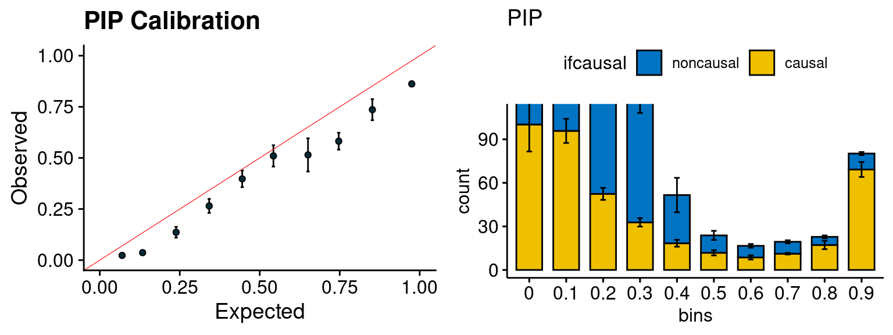
simutags <- paste(2, 1:5, sep = "-")
plot_PIP(configtag, runtag2, simutags)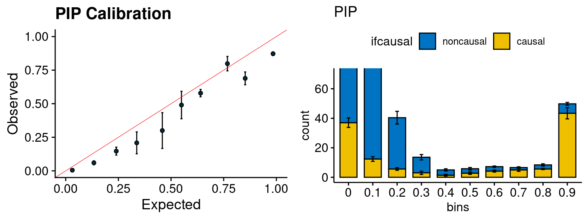
- run susie for each regions with thinned SNPs, then select regions with strong gene PIP (max PIP > 0.8) and rerun susie with full SNPs.
configtag <- 1
runtag2 = "ukb-s80.45-adi"
simutags <- paste(1, 1:5, sep = "-")
plot_PIP(configtag, runtag2, simutags)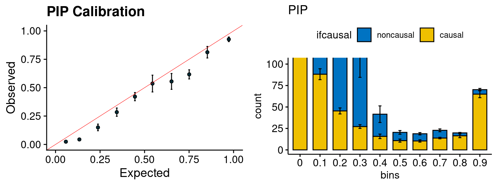
simutags <- paste(2, 1:5, sep = "-")
plot_PIP(configtag, runtag2, simutags)
Results-more simulations + compare
We run the last step of ctwas_rss using way (3) as described above. We run FUSION following default settings and adjust p values by BH method to get expected FDP. we ran coloc for all genes with TWAS p < 1e-4. We use PP4 (SNP associate with both traits).
configtag <- 1
runtag = "ukb-s80.45-adi"
simutags <- paste(1, 1:5, sep = "-")
plot_par(configtag, runtag, simutags)simulations 1-1 1-2 1-3 1-4 1-5 : mean gene PVE: 0.1017998 , mean SNP PVE: 0.4978166
plot_PIP(configtag, runtag2, simutags)
plot_fusion_coloc(configtag, runtag, simutags)
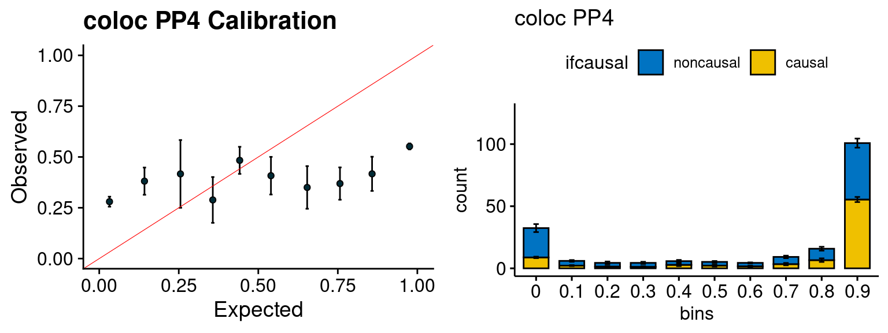
simutags <- paste(2, 1:5, sep = "-")
plot_par(configtag, runtag, simutags)simulations 2-1 2-2 2-3 2-4 2-5 : mean gene PVE: 0.1079327 , mean SNP PVE: 0.4916843
plot_PIP(configtag, runtag, simutags)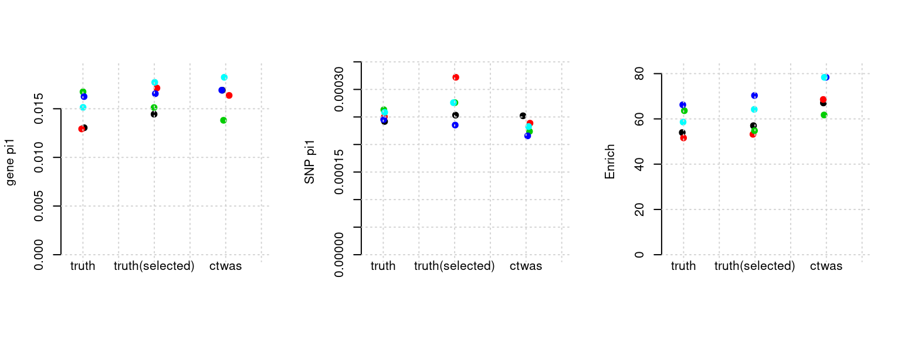
plot_fusion_coloc(configtag, runtag, simutags)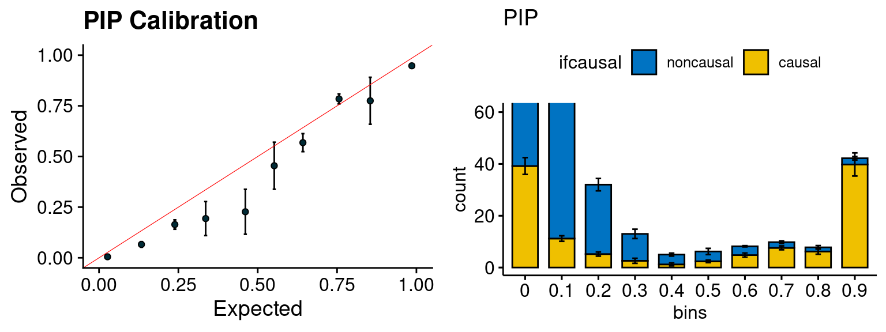
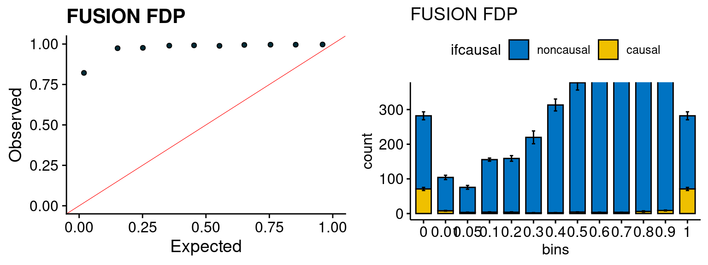
simutags <- paste(3, 1:5, sep = "-")
plot_par(configtag, runtag, simutags)simulations 3-1 3-2 3-3 3-4 3-5 : mean gene PVE: 0.05096057 , mean SNP PVE: 0.4983471
plot_PIP(configtag, runtag, simutags)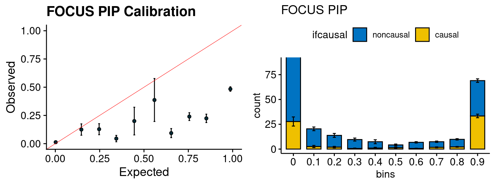
plot_fusion_coloc(configtag, runtag, simutags)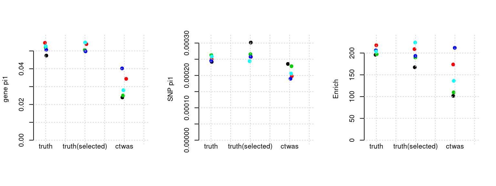
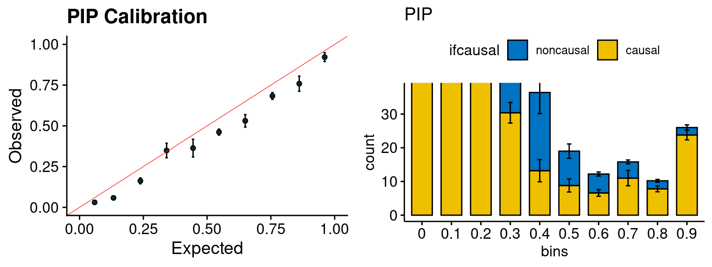
simutags <- paste(4, 1:5, sep = "-")
plot_par(configtag, runtag, simutags)simulations 4-1 4-2 4-3 4-4 4-5 : mean gene PVE: 0.05429329 , mean SNP PVE: 0.4936471 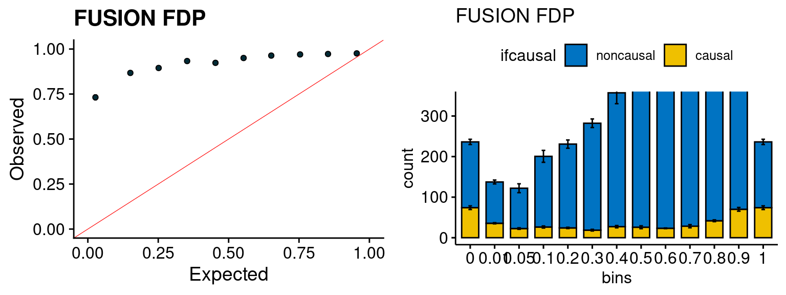
plot_PIP(configtag, runtag, simutags)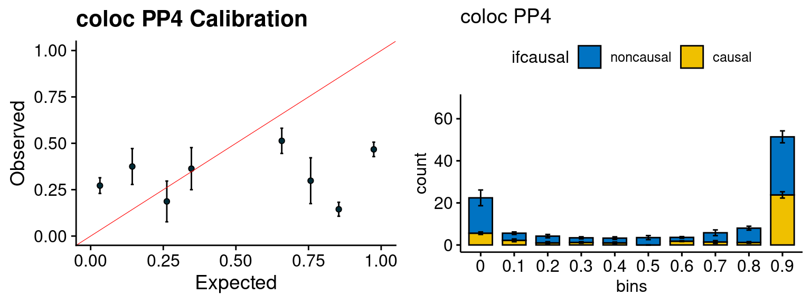
plot_fusion_coloc(configtag, runtag, simutags)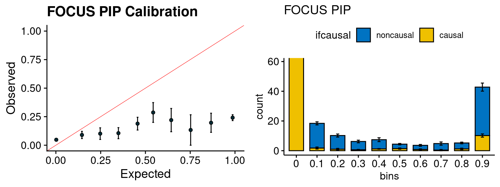
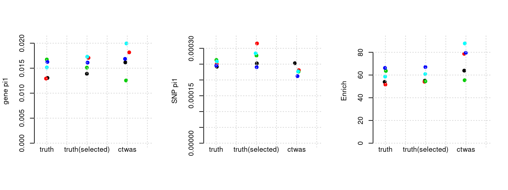
simutags <- paste(5, 1:5, sep = "-")
plot_par(configtag, runtag, simutags)simulations 5-1 5-2 5-3 5-4 5-5 : mean gene PVE: 0.2031654 , mean SNP PVE: 0.4968864
| Version | Author | Date |
|---|---|---|
| b096cb2 | simingz | 2021-04-04 |
plot_PIP(configtag, runtag, simutags)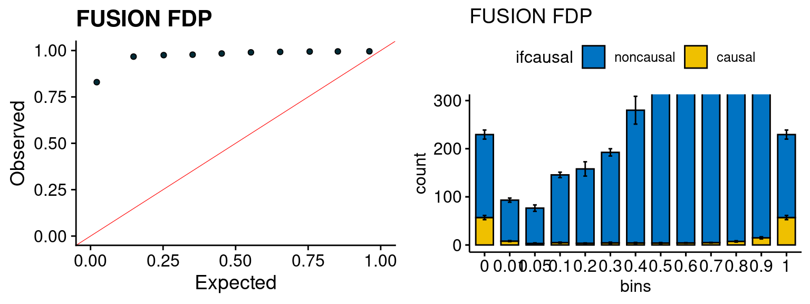
| Version | Author | Date |
|---|---|---|
| b096cb2 | simingz | 2021-04-04 |
plot_fusion_coloc(configtag, runtag, simutags)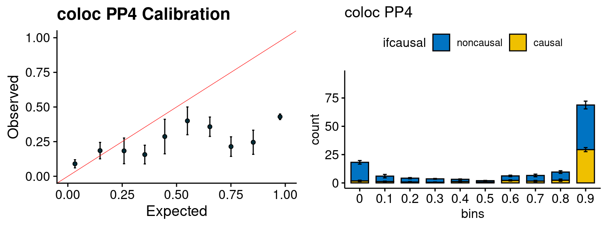
| Version | Author | Date |
|---|---|---|
| b096cb2 | simingz | 2021-04-04 |
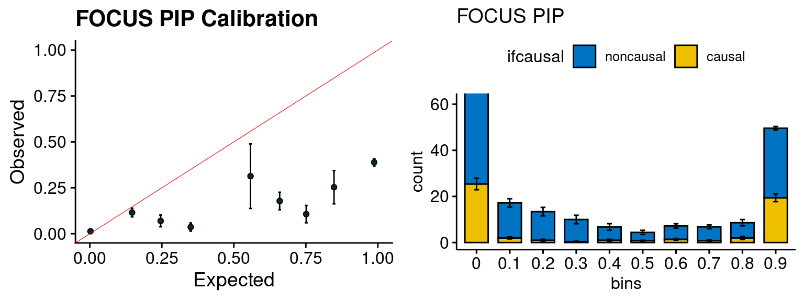
| Version | Author | Date |
|---|---|---|
| b096cb2 | simingz | 2021-04-04 |
simutags <- paste(6, 2:5, sep = "-")
plot_par(configtag, runtag, simutags)simulations 6-2 6-3 6-4 6-5 : mean gene PVE: 0.2204245 , mean SNP PVE: 0.48299 
| Version | Author | Date |
|---|---|---|
| b096cb2 | simingz | 2021-04-04 |
plot_PIP(configtag, runtag, simutags)
| Version | Author | Date |
|---|---|---|
| b096cb2 | simingz | 2021-04-04 |
plot_fusion_coloc(configtag, runtag, simutags)
| Version | Author | Date |
|---|---|---|
| b096cb2 | simingz | 2021-04-04 |
| Version | Author | Date |
|---|---|---|
| b096cb2 | simingz | 2021-04-04 |
simutags <- paste(7, c(1:3,5), sep = "-")
plot_par(configtag, runtag, simutags)simulations 7-1 7-2 7-3 7-5 : mean gene PVE: 0.09940725 , mean SNP PVE: 0.303754
| Version | Author | Date |
|---|---|---|
| b096cb2 | simingz | 2021-04-04 |
plot_PIP(configtag, runtag, simutags)
| Version | Author | Date |
|---|---|---|
| b096cb2 | simingz | 2021-04-04 |
plot_fusion_coloc(configtag, runtag, simutags)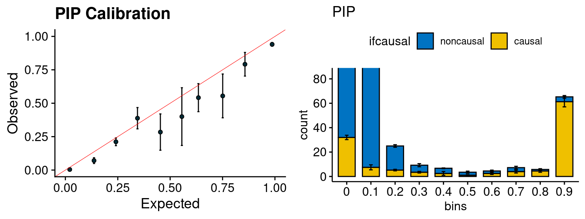
| Version | Author | Date |
|---|---|---|
| b096cb2 | simingz | 2021-04-04 |
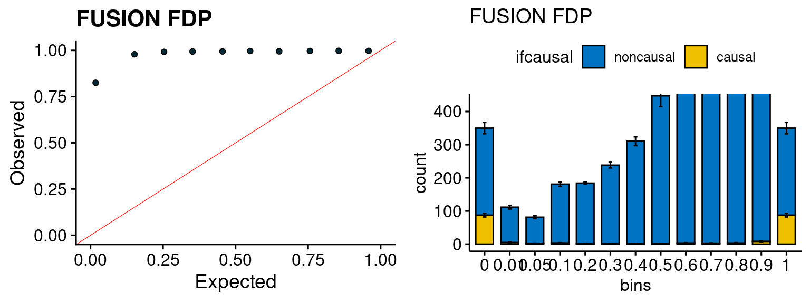
| Version | Author | Date |
|---|---|---|
| b096cb2 | simingz | 2021-04-04 |
simutags <- paste(8, 1:5, sep = "-")
plot_par(configtag, runtag, simutags)simulations 8-1 8-2 8-3 8-4 8-5 : mean gene PVE: 0.09875124 , mean SNP PVE: 0.3003111
| Version | Author | Date |
|---|---|---|
| b096cb2 | simingz | 2021-04-04 |
plot_PIP(configtag, runtag, simutags)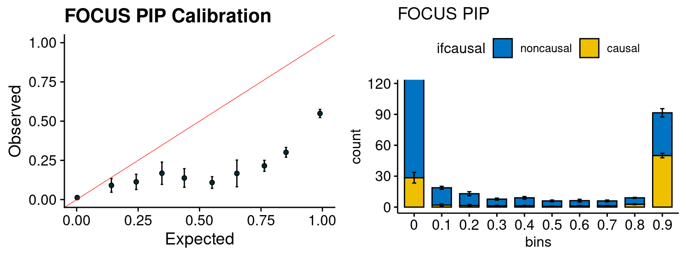
| Version | Author | Date |
|---|---|---|
| b096cb2 | simingz | 2021-04-04 |
plot_fusion_coloc(configtag, runtag, simutags)
| Version | Author | Date |
|---|---|---|
| b096cb2 | simingz | 2021-04-04 |
| Version | Author | Date |
|---|---|---|
| b096cb2 | simingz | 2021-04-04 |
simutags <- paste(9, 1:5, sep = "-")
plot_par(configtag, runtag, simutags)simulations 9-1 9-2 9-3 9-4 9-5 : mean gene PVE: 0.02040089 , mean SNP PVE: 0.4987186
| Version | Author | Date |
|---|---|---|
| b096cb2 | simingz | 2021-04-04 |
plot_PIP(configtag, runtag, simutags)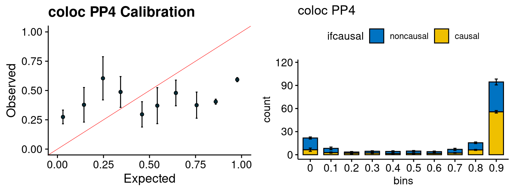
| Version | Author | Date |
|---|---|---|
| b096cb2 | simingz | 2021-04-04 |
plot_fusion_coloc(configtag, runtag, simutags)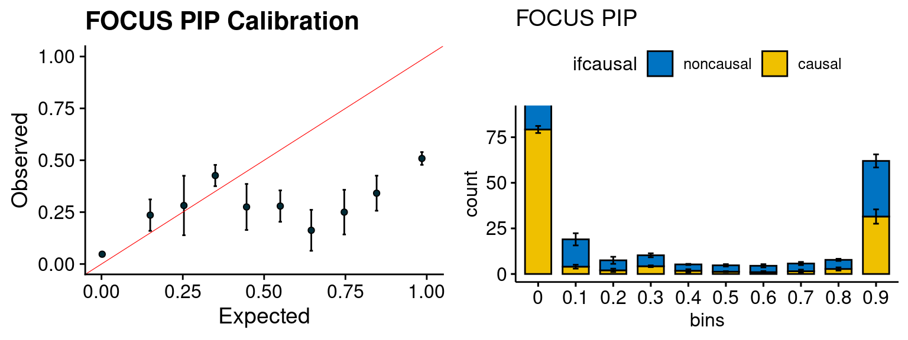
| Version | Author | Date |
|---|---|---|
| b096cb2 | simingz | 2021-04-04 |
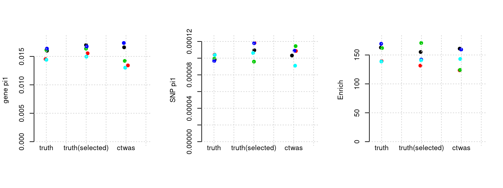
| Version | Author | Date |
|---|---|---|
| b096cb2 | simingz | 2021-04-04 |
simutags <- paste(10, 1:5, sep = "-")
plot_par(configtag, runtag, simutags)simulations 10-1 10-2 10-3 10-4 10-5 : mean gene PVE: 0.02179879 , mean SNP PVE: 0.4948963 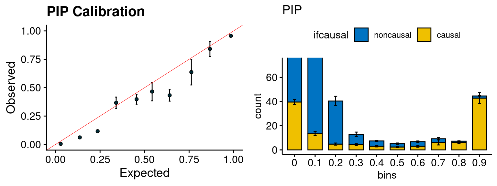
| Version | Author | Date |
|---|---|---|
| b096cb2 | simingz | 2021-04-04 |
plot_PIP(configtag, runtag, simutags)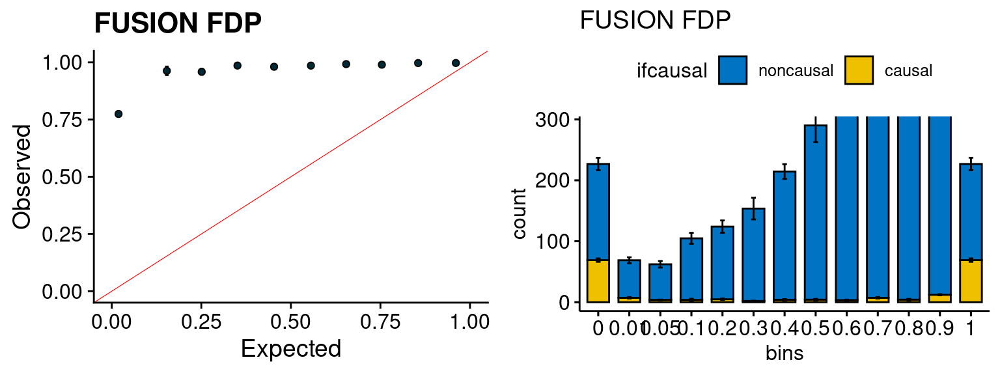
| Version | Author | Date |
|---|---|---|
| b096cb2 | simingz | 2021-04-04 |
plot_fusion_coloc(configtag, runtag, simutags)
| Version | Author | Date |
|---|---|---|
| b096cb2 | simingz | 2021-04-04 |
| Version | Author | Date |
|---|---|---|
| b096cb2 | simingz | 2021-04-04 |
sessionInfo()R version 3.6.1 (2019-07-05)
Platform: x86_64-pc-linux-gnu (64-bit)
Running under: Scientific Linux 7.4 (Nitrogen)
Matrix products: default
BLAS/LAPACK: /software/openblas-0.2.19-el7-x86_64/lib/libopenblas_haswellp-r0.2.19.so
locale:
[1] LC_CTYPE=en_US.UTF-8 LC_NUMERIC=C
[3] LC_TIME=en_US.UTF-8 LC_COLLATE=en_US.UTF-8
[5] LC_MONETARY=en_US.UTF-8 LC_MESSAGES=en_US.UTF-8
[7] LC_PAPER=en_US.UTF-8 LC_NAME=C
[9] LC_ADDRESS=C LC_TELEPHONE=C
[11] LC_MEASUREMENT=en_US.UTF-8 LC_IDENTIFICATION=C
attached base packages:
[1] stats graphics grDevices utils datasets methods base
other attached packages:
[1] ggpubr_0.4.0 plotrix_3.7-6 cowplot_1.0.0
[4] stringr_1.4.0 plyr_1.8.4 tidyr_1.1.0
[7] plotly_4.9.0 ggplot2_3.2.1 data.table_1.13.2
[10] ctwas_0.1.12
loaded via a namespace (and not attached):
[1] httr_1.4.2 jsonlite_1.6 viridisLite_0.3.0
[4] foreach_1.4.4 pgenlibr_0.2 carData_3.0-2
[7] logging_0.10-108 R.utils_2.9.0 highr_0.8
[10] cellranger_1.1.0 yaml_2.2.0 pillar_1.5.1
[13] backports_1.1.4 lattice_0.20-38 glue_1.4.2
[16] digest_0.6.20 promises_1.0.1 ggsignif_0.5.0
[19] colorspace_1.4-1 R.oo_1.22.0 htmltools_0.3.6
[22] httpuv_1.5.1 Matrix_1.2-18 pkgconfig_2.0.2
[25] broom_0.7.5 haven_2.3.1 purrr_0.3.4
[28] scales_1.1.0 whisker_0.3-2 openxlsx_4.1.0.1
[31] later_0.8.0 rio_0.5.16 git2r_0.26.1
[34] tibble_3.1.0 farver_2.0.1 generics_0.0.2
[37] car_3.0-5 ellipsis_0.2.0.1 withr_2.4.1
[40] lazyeval_0.2.2 magrittr_1.5 crayon_1.3.4
[43] readxl_1.3.1 evaluate_0.14 R.methodsS3_1.7.1
[46] fs_1.3.1 fansi_0.4.0 rstatix_0.7.0
[49] forcats_0.4.0 foreign_0.8-71 tools_3.6.1
[52] hms_0.5.3 lifecycle_1.0.0 munsell_0.5.0
[55] ggsci_2.9 zip_2.0.3 compiler_3.6.1
[58] rlang_0.4.10 debugme_1.1.0 grid_3.6.1
[61] iterators_1.0.10 htmlwidgets_1.3 labeling_0.3
[64] rmarkdown_1.13 gtable_0.3.0 codetools_0.2-16
[67] abind_1.4-5 DBI_1.1.0 curl_3.3
[70] R6_2.4.0 gridExtra_2.3 knitr_1.23
[73] dplyr_1.0.5 utf8_1.1.4 workflowr_1.6.2
[76] rprojroot_1.3-2 stringi_1.4.3 Rcpp_1.0.5
[79] vctrs_0.3.7 tidyselect_1.1.0 xfun_0.8